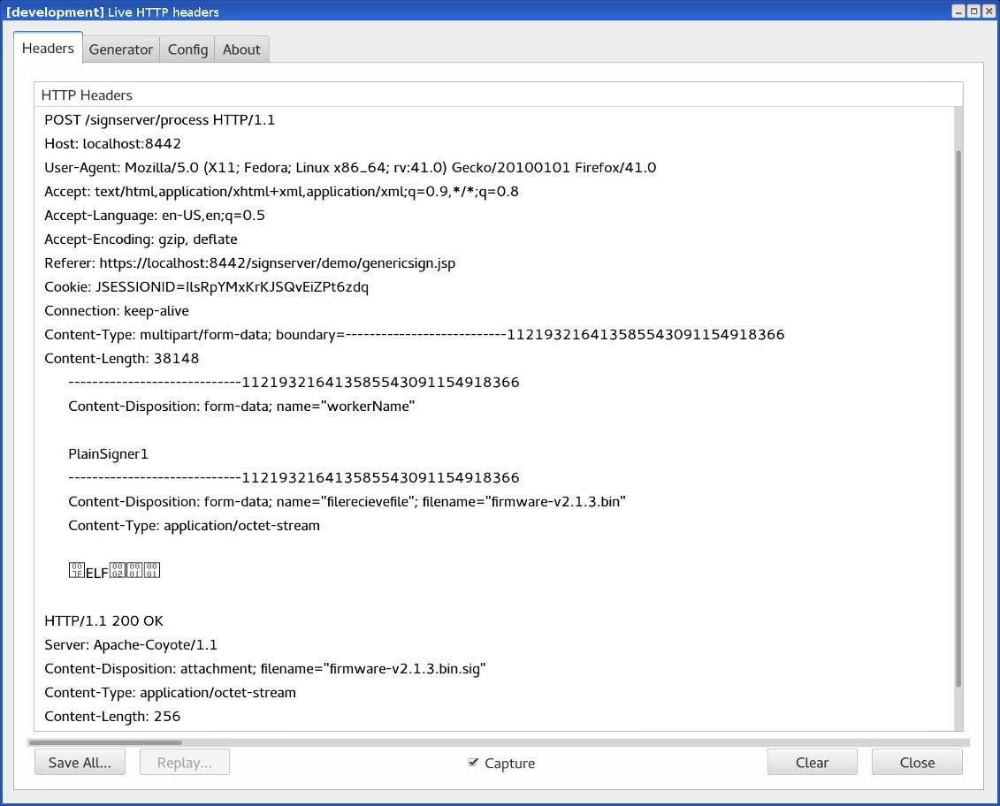

Code Signing with CMS Signatures
Similarly to the plain signature format, the Cryptographic Message Syntax (CMS) format based on PKCS#7 can be used to sign arbitrary data. Many signature formats include CMS signatures, such as Authenticode and JAR signing. The format can also be useful standalone for signing firmware or release packages. Existing tools like OpenSSL can in many cases be used to verify the signatures.
The CMS signature includes the signer certificate and can also optionally include a time-stamp token from a Time-Stamping Authority (TSA) using the RFC#3161 format.
The CMS signature can be created with the content of the original document encapsulated within the signature. More useful for code signing is generally the detached signature option where the signature can be in a separate file.
Adding a CMS Signer
There are multiple CMS signers in SignServer, for example:
CMS Signer: Provides basic functionality.
Extended CMS Signer: Provides additional functionality like time-stamping support and is thus the recommended one to use.
To add an Extended CMS Signer, follow the steps:
Access the Admin Web.
On the Workers page, click Add and select From Template.
Select extended_cms_signer.properties and click Next.
Click Apply.
Select the Worker name ExtendedCMSSigner.
Click the Configuration tab and make the appropriate adjustments for:
NAME: Specify a name.
CRYPTOTOKEN: If using SignServer Enterprise, this should match the name of the Crypto Token configured in Set up a Crypto Worker. If you are on an Appliance, this Crypto Token was created for you with the name HSMCryptoToken10.
Generate a new key-pair for the signer, by clicking the Status Summary tab and then Renew Key.
Choose a key algorithm, such as RSA and a key specification such as 2048 and click Generate.
Create a Certificate Signing Request (CSR) for the new key-pair by clicking Generate CSR.
If you set the NOCERTIFICATES property to true, you do not need to generate a CSR or install the certificate. Go to Step 15.
Choose a signature algorithm like SHA256withRSA and fill in a subject DN (name) for the new certificate such as CN=Plain Signer Test,O=My Company, C=SE, and click Generate.
Click Download and save the CSR file.
Bring the CSR file to your Certification Authority to get the certificate and the CA certificates in return.
Before installing certificates in a production system, check the signers authorization as the signer will be fully functional and ready to receive requests once the certificates are installed.
Click Install certificates and browse for the certificate files. Start by providing the signer certificate and then follow with the issuing CA certificates in turn. Click Add to have the certificates listed in the chain.
When all certificates have been added in the right order click Install.
The signer should be in state ACTIVE. If not, check the top of its Status Summary page for any errors.
Using the CMS Signer
The files to be signed can be submitted using any of the available interfaces:
Web Form Upload: Upload file using the SignServer Client Web form in your web browser.
Scripting using cURL or wget: Use an HTTP client such as cURL or wget.
SignClient: Use the SignServer Client Command Line Interface (CLI).
Web Form Upload
The web form for uploading is available on the SignServer Client Web pages.
Use the Generic page allowing text input or file upload by specifying the Worker name:

Scripting using cURL or wget
The following displays a cURL upload example. Replace http://localhost:8080/ with the address of your server or appliance:
cURL Upload Example
curl -F "workerName=CMSSigner1" -F "file=@firmware.bin" \http://localhost:8080/signserver/process > firmware.sigShowing the HTTP traffic between the browser and the server:

Example of response with signature file:

SignClient
To submit the CMS Signer through the SignClient, run the following command:
SignClient Example
bin/signclient signdocument -workername CMSSigner1 -infile firmware.bin -outfile firmware.sigThe SignClient can also run (as User) in batch mode where all input files in one directory are processed in a number of parallel requests and written to an output directory like the following:
SignClient Batch Example
bin/signclient signdocument -workername CMSSigner1 -indir ./input/ -removefromindir -outdir ./output/ -threads 10Verifying a CMS Detached Signature
As the signature and the file are in separate files, both are needed when verifying the signature. Let's say you have a file called software-release-1.0.zip and have provided it to the CMS Signer and obtained a detached signature now stored in a file called software-release-1.0.zip.p7s. Using OpenSSL, the signature can be verified according to the following example:
OpenSSL CMS Example
openssl cms -verify -in software-release-1.0.zip.p7s -inform DER -content software-release-1.0.zip -CAfile ca.pem > /dev/nullNote that the input format is specified as in DER (binary) format.
The redirect to /dev/null at the end is made as OpenSSL would otherwise output the content of the file.
CMS Signer Options
The following lists relevant properties to configure for the CMS Signer:
Worker Property | Description |
|---|---|
SIGNATUREALGORITHM | Specifying the algorithm used to use for the signature. |
DETACHEDSIGNATURE | Set to true to use the detached signature mode where the content is not being included in the signature. For code signing, you likely would like to use the |
CLIENTSIDEHASHING | If the input to the signer should not be the content but a hash of it. For more information, see Code Signing with Client-side Hashing. |
For all available properties, refer to CMS Signer and Extended CMS Signer.